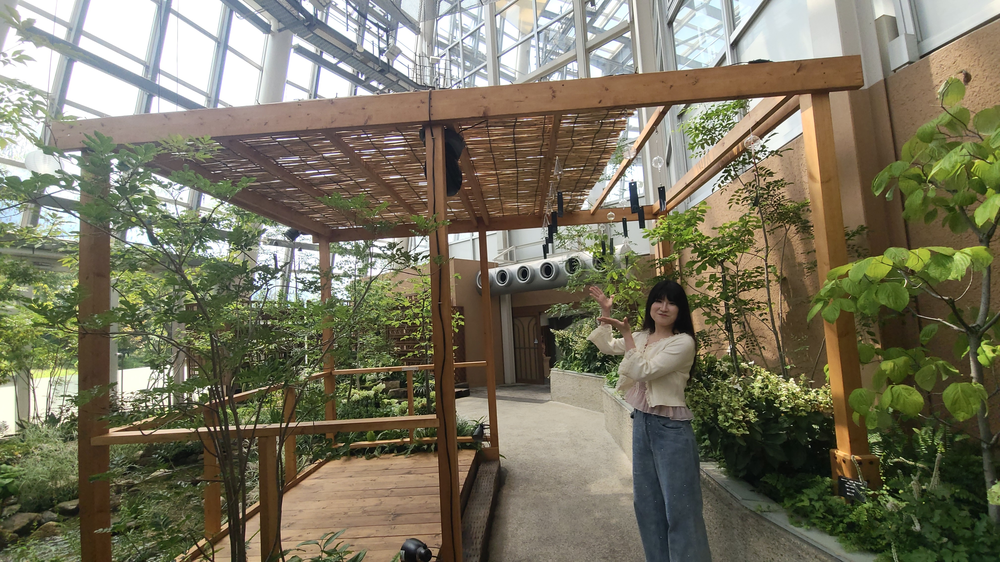

Retouching
Photoshopを用いて、写真全体の印象をより明るく整え、人物の魅力を自然に引き出すレタッチを行いました。



まず全体のトーンを調整し、写真に透明感と清潔感が出るように明るさを整えました。
人物に対しては、不自然さが出ないように配慮しながら小顔効果を加え、輪郭をすっきりと見せています。
さらに、背景を歪ませないよう注意しつつ体のラインをわずかに補正し、スタイルを自然に細身に見えるように調整しました。
過度な加工感を避けながらも、写真全体の雰囲気を損なうことなく印象を引き立てることを意識しました。
※画像をタップで拡大できます。